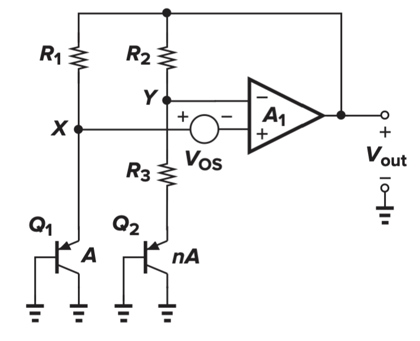
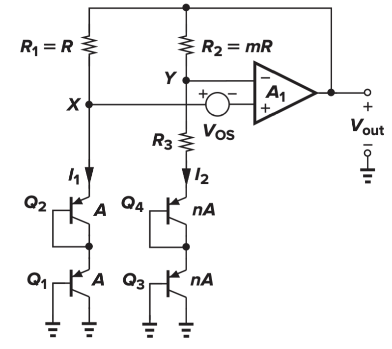
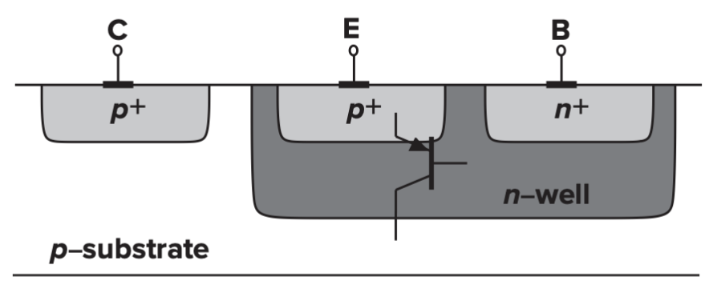
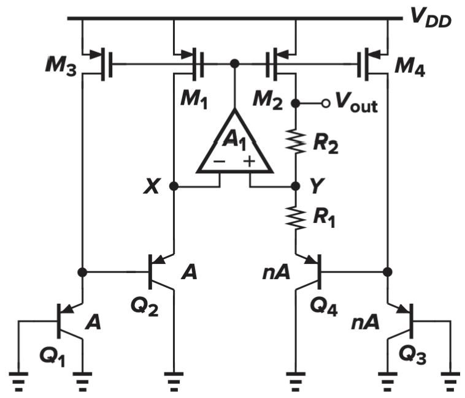
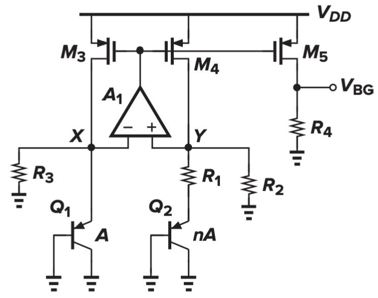
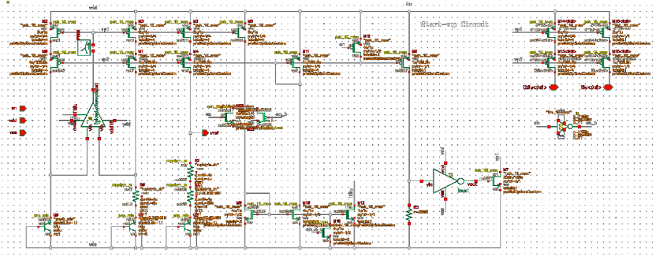
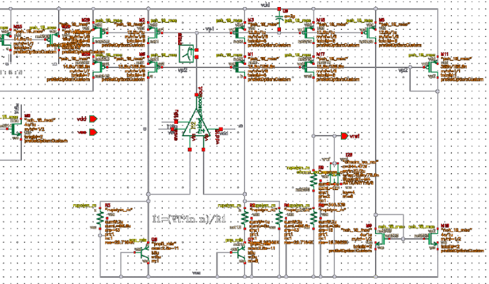
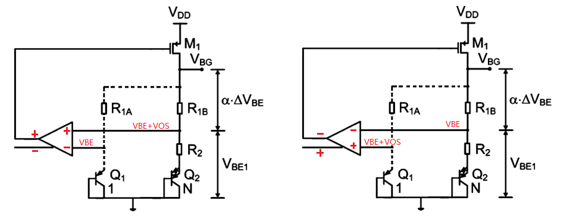
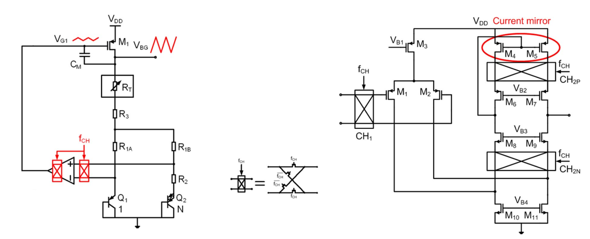
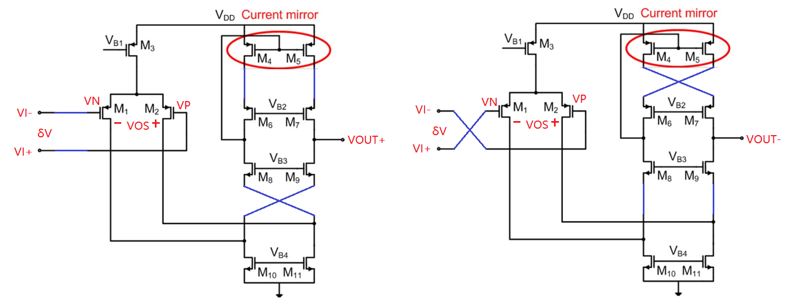

Chapter 12 Bandgap
Bandgap 是什么
第一次听到这个名字，学过半导体物理的人的第一反应应该是硅原子带隙 1.12eV。但这里指的是模拟电路中的电压/电流基准源，名叫 Bandgap reference（但这个名字确实跟原子带隙有关系）
其设计目的是：保证在 PVT 的变化下，输出是一个十分稳定的电压/电流值。其中 P (Process)工艺无关，V(Voltage)电压无关，T(Temperature)温度无关。
一个稳定的基准源对于模拟电路来说至关重要，模拟电路的大部分模块都需要一个 reference，这个 reference 就是由 Bandgap 提供的，尤其是一些高精度的信号链模块如高精度运放，ADDA 数模转换器，对 bandgap 更加严苛
设计思路
虽然刚刚讲到 PVT 无关这三个指标，但其最基本的设计思路是从 T(Temperature)温度无关开始的。简单来说就是用一个正温度系数电压和负温度系数电压相抵消就得到了一个 0 温度系数电压了。
负温度系数 (CTAT)电压
CTAT 全称是 Complementary To Absolute Temperature，也有叫做负温度系数电压的，我们一般直接称呼它为 。pn 节的正向导通电流可以提供，或者将 BJT 的基极和集电极连接起来也可以。直接给结论就是（详见拉扎维 12.3.1）
这个数在 的时候大概是
（似乎跟放大系数 β 也有关系，关系到二阶系数补偿，待补充）
正温度系数 (PTAT)电压
PTAT 全称是 Proportional To Absolute Temperature，是用两个电流大小不同的电流去灌 BJT 而产生的电压差，我们一般称呼它为 。
对于单个 pn 节，其正向导通电流与电压的关系为
对于两个不同电流密度的 BJT，产生的电压差为
（IS1 和 IS2 一般是一样的，但是实际电路中 IS 不同将会影响精度）
那怎么实现电压的减法呢？当然想到的是利用运算放大器作电压钳制，强制正负输入端电压相等。然后再用利用电阻做减法运算（电流=电阻两端电压相减/电阻阻值），见下图“简单Bandgap的实现电路”。
简单Bandgap
 简单Bandgap的实现电路
简单Bandgap的实现电路
这个图里面的R1和R2负责控制电流大小，阻值应该相等，电流大小也相等。之前说过，PTAT电压的产生要求流经BTJ的电流大小不相等，那么这里在右侧支路并联n个BJT就可以了。
其中R3/R2这个电阻比值和n值非常重要，这个关系到正温度系数和负温度系数电压是否能完美补偿为0温度系数。因为负温度系数电压，但是，所以正温度系数应该乘以17.2倍才能抵消掉负温度系数。
写出这个简单电路的完整公式
可以看出来这个17.2由和两部分组成，调配好系数后最终得到Vout的值
直接说结论了，调配完成
Op Amp Offset (运放失调)
在所有影响Bandgap精度因素中，运放失调是影响最严重的，而运放的失调来源于内部结构在生产工艺过程中产生的不对称性，尤其是输入对管（详见拉扎维14章）

失调带来的影响
在输出端，运放的失调电压 被放大 倍
减少运放失调的影响
首先假设运放无法消除（实际上可以用 Chopper 消除），那么我们就应该去思考如何去减少它产生的影响。我们从两方面去思考减少运放失调影响的方法。一个是从运放本身的角度考虑，一个是用大电压盖过 的影响。
-
运放本身，可以采用大尺寸输入器件，并采取合理版图布局以减小失配
-
增大 Q1 和 Q2 两条支路的电流比率，将 变为
-
电路的每条分支多串一个 PN 结，使得 增加一倍
同时使用方法2,3的电路实现
上图的公式变为
从这个公式中可以看出此结构的局限性，即无法应用于低压条件，多串联一个 PN 结使得电压裕度进一步缩小，并且待温度系数平衡时候，输出电压也加倍了
而且这样的结构还需要进一步改进
-
偏置电流不能由电阻提供，因为晶体管的偏置需要有相同的温度特性，这里要换成 PMOS 电流源。
-
不符合CMOS工艺，为了在 CMOS 的 N 阱工艺中做出 PNP，得采取下图的方式。其中 N 阱作基极(Base)，P 衬底作集级(Collector)，而 P-Sub 必定接地，所以上图的 Q2，Q4 的 Collector 也必须接地。
N阱工艺中做出PNP
改进后的电路
但是 Q2 和 Q4 的有基极电流，也会造成误差
Low-Voltage Bandgap References (低压带隙基准)
做低压结构之前，首先要明确为什么之前的结构的输出电压降不下去。根本原因在于 （负温度系数电压）无法调整，然后我们又需要约 17.2 个 （正温度系数电压）来平衡掉 ，最后平衡的结果就是 1.25V
而低压 Bandgap 的中心思想就是使得 可调。利用 产生负温度系数电流(CTAT)，以对应 PTAT 电流
低压Bandgap结构
最低电源电压 要求为
完整表达式
若考虑失调电压
简单理解此表达式 ， 用于调节输出值，而 用于平衡正负温度系数
启动及稳定性问题
其他考虑（速度，电源抑制，噪声，输出阻抗）
实际电路
电压模

电流模 (低压结构)

高阶运用
源自 2011 年 JSSC 的一篇 bandgap 设计经典论文“A Single-Trim CMOS Bandgap Reference With a 3δ Inaccuracy of 0.15% From 40C to 125C”（代尔夫特的大佬们，膜）Bandgap_Ge_JSSC2011.pdf
国内博客也有一些写的很好的文章解读
https://zhuanlan.zhihu.com/p/576098454
https://blog.eetop.cn/blog-1395527-6946327.html
Trimming
根据这篇论文，仅用单点校准（Single-Trim）
Curvature Correction
也叫二阶温度系数补偿（待补充）
Offset Cancellation - Chopping Technique
Chopping 的原理：周期性的将运放输入端交换，同时保证运放的正负反馈极性不变

以全差分折叠式共源共栅为例


但是由于时钟的引入和运放极性的周期性变换，运放的输出端会产生一个ripple，不过这个ripple的频率是已知的，所以
常见问题和总结
Q1: 为什么低压结构的启动电路更难做
A1: 因为对电流的大小有比较严格的要求，当电流较小的时候，电流只能通过电阻，此时 BJT 未开启，于是运放输入两端难以形成负反馈 > 正反馈
Q2: 输出的精度会被哪些因素影响，应该怎么改善
A2: 按照元器件来分，有如下几个方面
-
运放的offset，这是最大的影响，源于运放内部的对管在生产过程中产生的不匹配。从最基础的运放设计来说，运放 offset 输出管可以做大，以减少边缘效应，然后合理的版图摆放也是必不可少。但想要真正消除 offset，就得用上 chopper
-
运放增益过小导致运放输入正负端电压差太大。运放的增益至少要 40dB 以上，单级的 Folded-Cascode 就可以达到
-
电流镜的不匹配，源自沟道长度调制效应 (Channel Length Modulation)，从电路的角度去理解就是输出阻抗太小，应该增大沟道长度 L（还对 Vth 的失配有好处），还可以做成 Cascode 结构。
-
BJT的不匹配，BJT 的放大系数 β 值，详见高阶应用-Curvature Correction（待补充）
Q3: 噪声应该怎么减小
A3: 输出端应该挂电容以减少高频噪声；电流镜的 Gate 端挂 RC 滤掉闪烁噪声
Q4: 为啥 Bandgap 仿真温漂的时候，是个抛物线开口向下的曲线？
Q4: BJT 能不能换成二极管？
Q5: 运放为啥要单级运放？能不能用二级运放？对带宽有无要求？